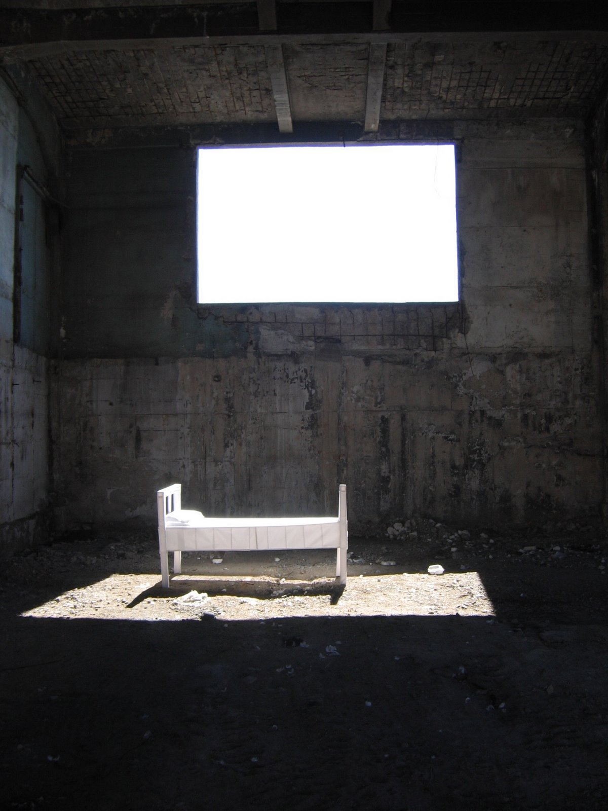
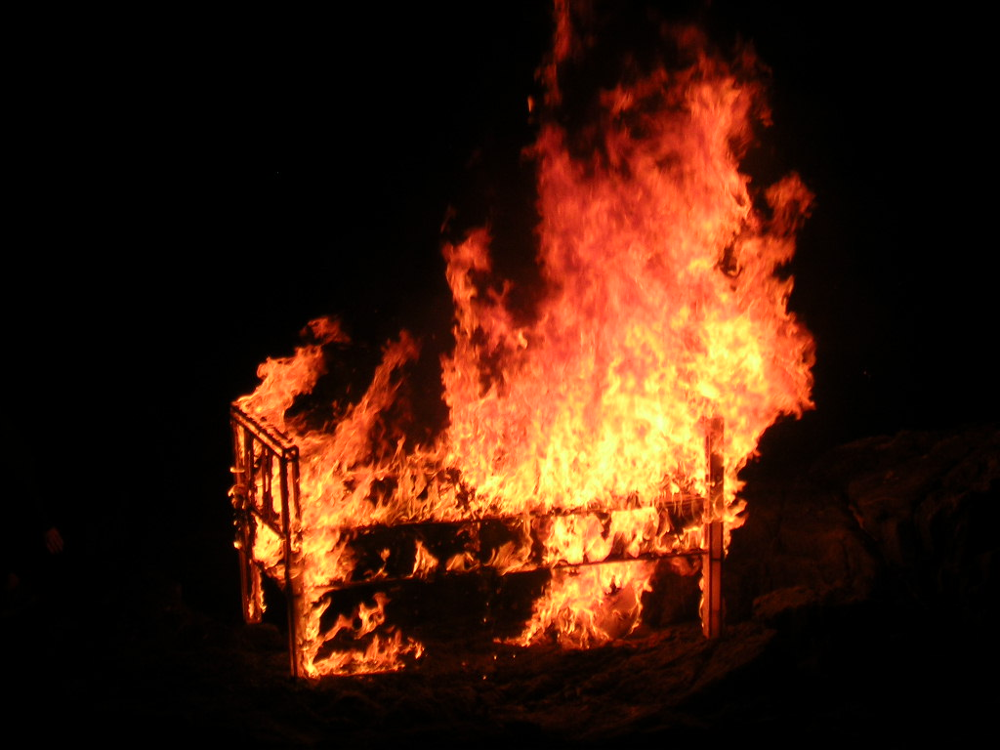

Dossier · Estudio de Cama
Pieza de Paisaje / Estudio de Cama
Estudio en proceso en el Cerro Florida, Valparaíso, con páginas de cuadernos, junquillos, pegamentos, sistema eléctrico, fierros y hormigón. Distintos ensayos de la cama como pieza: vaciada en hormigón sobre un mirador de la ciudad, instalada en el interior de una vivienda en ruinas y, finalmente, quemada.



UbicaciónVALPARAÍSO
33°03′S · 71°36′O